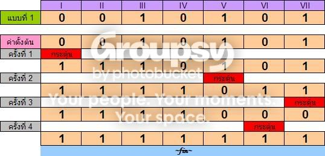

เอาล่ะ ไปทำมาละครับ
ไม่รู้ว่าท่าน LOKI KUN ทำเสร็จไปรึยัง
แต่บอกไว้สำหรับคนอื่นๆด้วยละกัน
เข้าเรื่องกันเลย เราต้องทำเควสปลุกเต่าให้ตื่นทั้ง 7 ตัวให้ได้
จากกระทู้นี้
ECO Saga7: มาริฯMermaid & กระดองท่านผู้เฒ่าเต่า โหลดโหด
by~ akitolee
ทำให้ทราบว่ามีอยู่ 5 รูปแบบสุ่มสถานะเต่าในแต่ละครั้ง (ผมทำไปสามครั้งเอง)
ให้ 0 หมายถึงเต่าหลับ และ 1 หมายถึงเต่าตื่นนะครับ
ทั้งหมดเป็นดังนี้

ครั้งแรกที่เราจะเริ่มทำเควสให้เดินไปคุยกับเต่าทุกตัวเสียก่อน ควรเรียงลำดับจะได้ไม่สับสน
ให้คุยแล้วกดยกเลิก อ่านตรงหัวข้อความก็จะรู้ว่าเต่าตัวนั้นตื่นอยู่หรือหลับอยู่ครับ
ทีนี้หลักการก็มีอยู่ว่า เมื่อทำการกระตุ้นเต่า(จะให้หลับหรือตื่นก็ตาม) มันจะส่งผลถึงเต่า "หมายเลข" ข้างๆมันให้กลายเป็นสภาพตรงข้ามไปด้วย
เช่น ถ้าเต่าทุกตัวหลับหมด หรือเป็น
0 0 0 0 0 0 0 แล้วเราปลุกตัวที่ 4 ผลที่ได้ก็คือ
0 0 1 1 1 0 0 เต่าตัวข้างๆซึ่งคือ 3,5 จะตื่นไปด้วย
อีกข้อคือ เต่าตัวที่อยู่ริมสุด (1,7) จะไม่กระทบกันเอง เช่น ถ้าเต่าทุกตัวหลับหมด
0 0 0 0 0 0 0 แล้วเราปลุกตัวที่ 7 ผลที่ได้คือ
0 0 0 0 0 1 1 ไม่ใช่ 1 0 0 0 0 1 1
ต่อจากนี้เป็นลำดับการปลุกแบบสั้นที่สุดเท่าที่ผมคิดได้
ps.ต่อจากนี้อาจเป็นการสปอยสำหรับหลายๆท่าน
ท่านใดที่ที่ต้องการสนุกกับเควสด้วยตนเองให้รีบ scroll ข้ามตารางหลากสีพวกนี้ไปเลยครับ
NOTE: เผื่อว่าอ่านอักษรไม่ออก(เซฟเป็น .jpg แบบนี้ทุกที - -)
ช่องสีแดงคือให้ไปกระตุ้นเต่าตัวนั้น(ให้เป็นสภาพตรงข้าม)

-------------------------------------------------------------------------- --------------------------------------------------------------------------
-------------------------------------------------------------------------- --------------------------------------------------------------------------
-------------------------------------------------------------------------- --------------------------------------------------------------------------
--------------------------------------------------------------------------

 e
e


 ตั้งแต่ไปเกาะมา ทำกาดองเต่ามา ไม่เคยทำได้สักทีต้องให้เพื่อนช่วยเสมอ ไม่เคยทำเองได้เลย อนาจๆๆ ยอมเหมือนกานเรื่องปลุกเต่ายอมมม
ตั้งแต่ไปเกาะมา ทำกาดองเต่ามา ไม่เคยทำได้สักทีต้องให้เพื่อนช่วยเสมอ ไม่เคยทำเองได้เลย อนาจๆๆ ยอมเหมือนกานเรื่องปลุกเต่ายอมมม